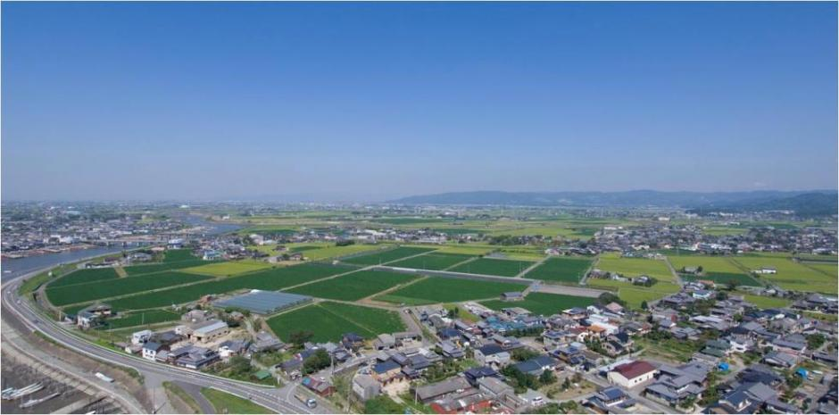

みやま市（福岡県）
みやま市は福岡県の南にある自然が豊かなまちです。筑後川や矢部川などのきれいな川が流れていて、農業が盛んです。特に、お米や野菜、果物がおいしいことで知られています。
また、清水寺という有名なお寺があり、春には桜がとてもきれいです。のんびりとした雰囲気で、人もあたたかく、暮らしやすい場所です。
みやま市は福岡県の南にある自然が豊かなまちです。筑後川や矢部川などのきれいな川が流れていて、農業が盛んです。特に、お米や野菜、果物がおいしいことで知られています。
また、清水寺という有名なお寺があり、春には桜がとてもきれいです。のんびりとした雰囲気で、人もあたたかく、暮らしやすい場所です。